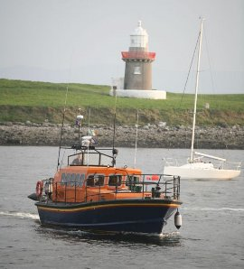
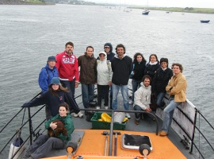

|
Trip around Sligo Bay is great fun. Fishing, seals, coney island, pub, lissadell, lighthouse. |
 I brought my Italian in-laws for a trip around Sligo bay. They were amazed by all the sights and sounds and really enjoyed the trip to Coney Island - Fran, Rome
 |